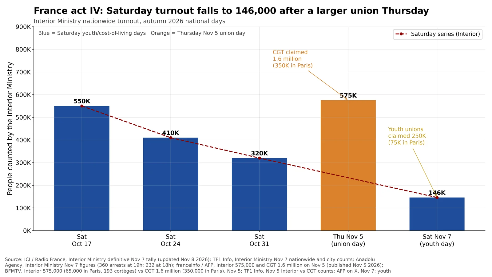

Q9. France Week 4

Interior Ministry nationwide turnout for the four consecutive Saturdays of France's autumn 2026 cost-of-living protests, plus the Thursday November 5 union day for wages and purchasing power. The ministry, restating earlier Saturdays in its November 7 communiqué, counted 550,000 people on October 17 (430 actions), 410,000 on October 24 (289), 320,000 on October 31 (227) and 146,000 on November 7 (141 actions, including 46,000 in Paris). Thursday November 5 — a different call, by the union intersyndicale — drew 575,000 people on the ministry's count (65,000 in Paris, 193 cortèges), more than any Saturday after October 17. Organizers disputed both of this week's official figures: the CGT claimed 1.6 million on November 5 (350,000 in Paris) and the youth intersyndicale claimed 250,000 on November 7 (75,000 in Paris).
- November 7 was down 73% from October 17 and 54% from October 31 on the ministry's figures (146,000 against 550,000 and 320,000).
- Arrests: the ministry reported 360 at 19:00 on November 7 (232 at 18:00) and 448 at 18:00 on November 5, plus 53 injured officers and 86 fire interventions on November 5. It released no injury count for November 7.
- About 70,000 police and gendarmes were deployed on both November 5 and November 7; on November 7 the ministry also reported about 40,000 preventive checks and 25 gendarmerie armored vehicles plus 15 water cannon.
- Regional Interior counts on November 7 included Lille 10,000, Bordeaux 9,100, Grenoble 6,000, Rennes 5,500 and Marseille 5,200 (TF1 Info). AFP posted both national tallies the same afternoon (https://x.com/afpfr/status/2119115795645014099).
Note: Turnout counts are contested: unions count higher, the ministry lower, and neither series is independently audited. Thursday November 5 and the Saturdays were called by different coalitions (union intersyndicale vs youth organizations), so they are not the same march repeated. The October 17, 24 and 31 Interior totals are the figures the ministry itself restated on November 7; organizer claims for those earlier Saturdays were not republished in the articles fetched for this update and are not plotted.
Sources: ICI / Radio France, Interior Ministry definitive Nov 7 tally (updated Nov 8 2026) TF1 Info, Interior Ministry Nov 7 nationwide and city counts Anadolu Agency, Interior Ministry Nov 7 figures (360 arrests at 19h; 232 at 18h) franceinfo / AFP, Interior 575,000 and CGT 1.6 million on Nov 5 (published Nov 5 2026) BFMTV, Interior 575,000 (65,000 in Paris, 193 cortèges) vs CGT 1.6 million (350,000 in Paris), Nov 5 TF1 Info, Nov 5 Interior vs CGT counts AFP on X, Nov 7: youth intersyndicale 250,000 vs Interior 146,000